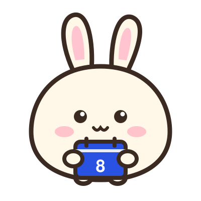

Komol Bunrueang
Computer engineering student and web developer
Year-two computer engineering student at Thammasat University. I like the moment code turns into something people use, and I build and ship small web apps for my own daily life. Next I want to learn how computer networks work.
Education
Thammasat UniversityExpected to graduate in 2029
Bachelor of Engineering, Computer Engineering, year two
Projects
jameswebpupu2026
A personal planner: calendar, notes and a money summary, at my-website.komolbunrueang.workers.dev
- Calendar, notes and quick capture; Claude can add events and notes through an MCP server I connected
- Runs on Cloudflare Workers with a D1 database; every push to GitHub deploys it
- Password login with a lockout after repeated wrong tries, and weekly backups
- Built together with Claude Code: I decided the features, reviewed each change and deployed it
Next.js, TypeScript, Cloudflare Workers, D1, MCP. Code: github.com/JorJamess/my-website
Expenses2026
An income and spending tracker for my monthly money
- Transactions by category and wallet, monthly budgets and recurring bills
- Its own login, an MCP server for Claude, and a read-only API that feeds jameswebpupu
- Built together with Claude Code
Next.js, Cloudflare Workers, D1, MCP. Code is private.
Skills
- Python: the basics, not yet with libraries
- Java: up to recursion
- JavaScript: the basics
- Git: intermediate, used every day
- Used in my projects with Claude Code: Next.js, TypeScript, Cloudflare Workers and D1, MCP
Looking for
- An internship in summer 2027
- Freelance work: websites for shops and people, web apps and back-office systems